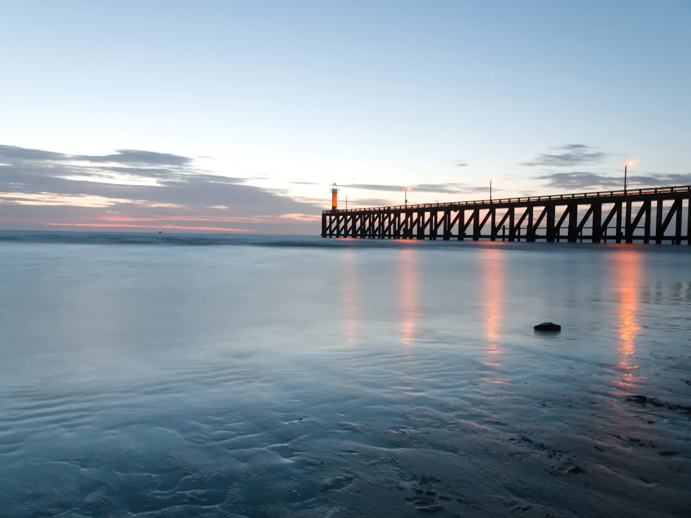
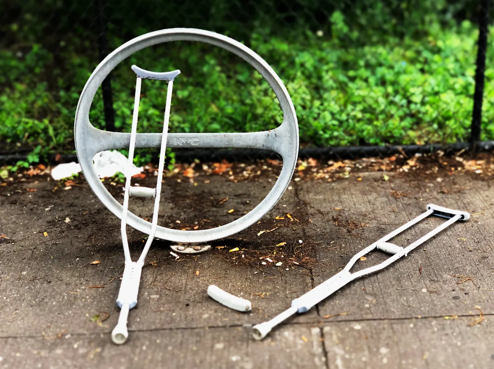
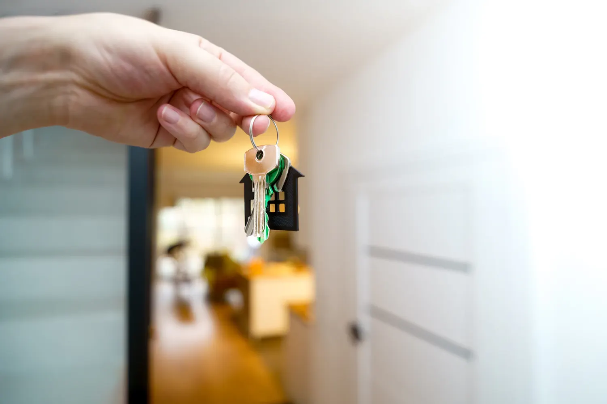
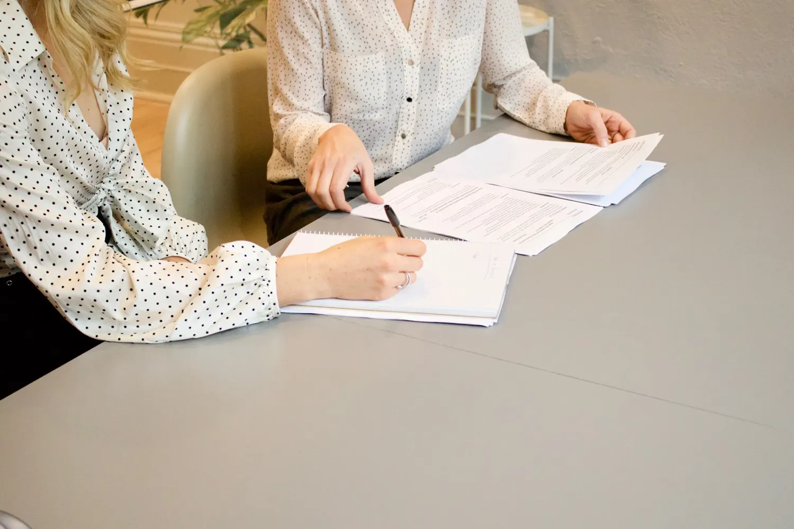
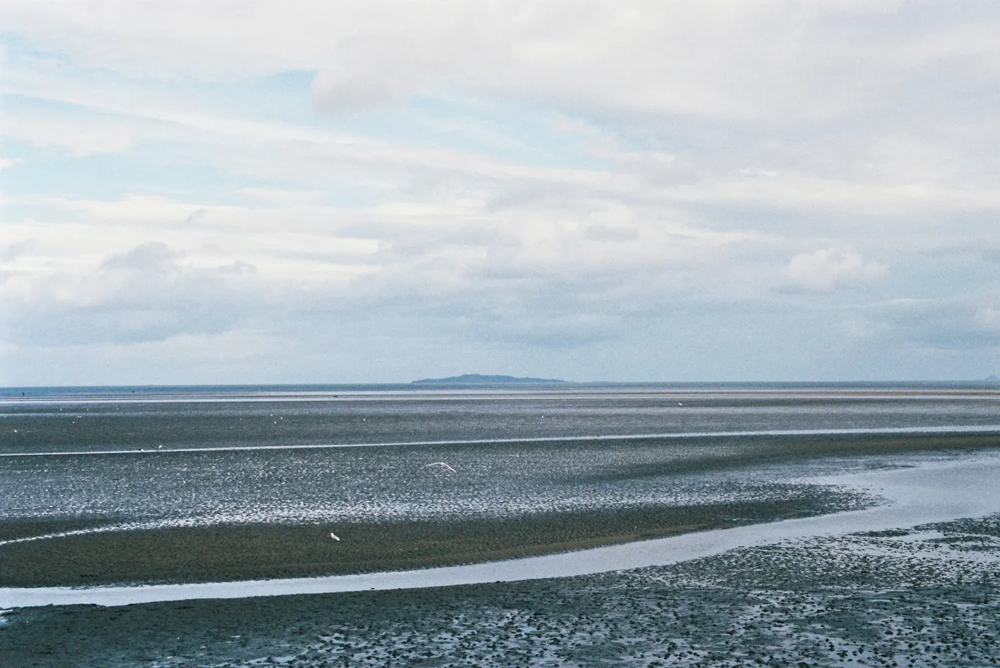

Klare taal, ook als uw zaak dat niet is.
Johan Decancq legt u uit waar u staat, met de voor- en nadelen erbij. Diplomatisch als het kan, doortastend als het moet. U spreekt altijd met de persoon die uw dossier kent.

Aanspreekpunt
U belt, en de persoon die opneemt kent uw dossier.
Grondige aanpak
Elk dossier wordt van alle kanten bekeken, ook buiten één tak van het recht.
Klare taal
Ingewikkelde juridische problemen, zo duidelijk mogelijk uitgelegd.
Waarvoor u bij het kantoor terechtkunt
Van een geschil met de aannemer tot een zaak voor de politierechtbank. Het kantoor is gespecialiseerd in burgerlijk recht, bouwrecht, ongevallen, verdeling en strafrecht.
Aannemings- en bouwrecht
Gebreken, vertraging of een aannemer die niet nakomt wat hij beloofde. We bekijken uw contract en uw rechten.

SchadeOngevallen en lichamelijke schade
Na een ongeval op straat of op het werk. Zodat u krijgt waar u recht op hebt, ook bij een arbeidsongeval.
Strafrecht
Een verhoor, een dagvaarding of een zaak voor de politierechtbank. Johan volgde de Salduzopleiding voor bijstand bij verhoren.
Relatie en gezin
Uit elkaar gaan, afspraken over de kinderen, onderhoudsgeld. Met aandacht voor wat er thuis gebeurt.

VerdelingBoedelscheiding
Een huis, spaargeld, een erfenis die verdeeld moet worden. Vereffening en verdeling zonder dat het jaren aansleept.

ContractContracten en burgerlijk recht
Een overeenkomst opstellen, nakijken of afdwingen. Met de vraag wat er gebeurt als het misloopt.

Diplomatisch en menselijk als het kan, doortastend als het moet. Altijd met één doel: het belang van de klant.
De visie van het kantoor

Johan Fernand Decancq, advocaat in Blankenberge
Na zijn studies in Gent en drie jaar stage vestigde Johan zijn kantoor in Blankenberge. Daar zit het nog altijd, in de Schaapstraat. Hij is gebonden door de deontologie en het beroepsgeheim van de balie, en dus uw vertrouwenspersoon in alles wat u hem vertelt.
- 1995Licentiaat in de rechten aan de Universiteit Gent
- 1996Eed als advocaat voor het Hof van Beroep in Gent
- Na drie jaar stageOp het tableau van de Orde van Advocaten in Brugge, kantoor in Blankenberge
- 2023Certificaat Supralat, de Salduzopleiding voor bijstand bij verhoren
Een vast netwerk van confraters
Zelden blijft een probleem beperkt tot één tak van het recht. Voor arbeidsrecht, fiscaal recht, vennootschapsrecht of publiekrecht werkt het kantoor samen met vaste collega's. Doen we het niet zelf, dan verwijzen we u door naar iemand met kennis van zaken.
Wat cliënten zeggen
“Vanaf het eerste gesprek gaf hij duidelijk en deskundig advies, waardoor ik meteen wist waar ik stond en wat ik kon verwachten. De communicatie verliep altijd vlot. Dankzij zijn professionele aanpak hebben we uiteindelijk de uitspraak gekregen waarop we gehoopt hadden.”
“Een advocaat die zich met hart en ziel op je dossier stort en met de best mogelijke verdediging naar de rechtbank trekt. In mijn geval naar de politierechtbank.”
“Meester Decancq heeft mij perfect geholpen bij mijn geschil met een bedrieglijke aannemer. Zeer tevreden met het resultaat.”